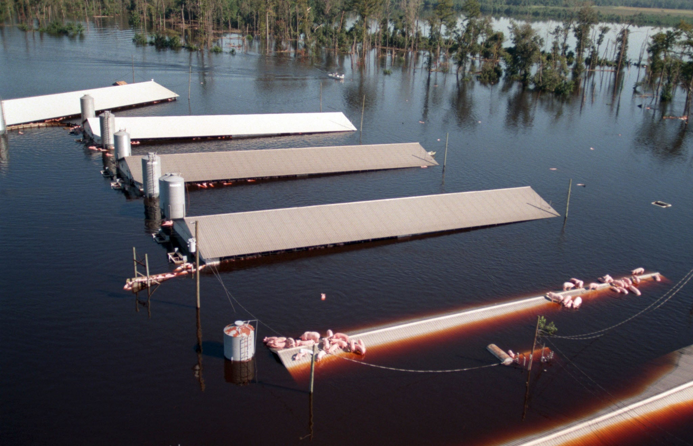

Section 2: Historical Perspectives on Wilderness
Justin Leinaweaver (Fall 2025)
A Spectrum of Environments (Nash 2014)
We have a duty to foster and protect wildness all around us (Cronon 1996)
Edenic Narratives
Sublime Narratives
Utility Narratives
Holistic Narratives

The narratives can help you unlock problem-solving!
Pinchot, G. (1910). The Fight for Conservation.
What is the wilderness?
What is the value of wilderness?
Hendee, J., Stankey, G. & Lucas, R. (1978). Wilderness Management. US Department of Agriculture.
Spirn, A. (1996). “Constructing Nature: The Legacy of Frederick Law Olmstead.” Uncommon Ground.